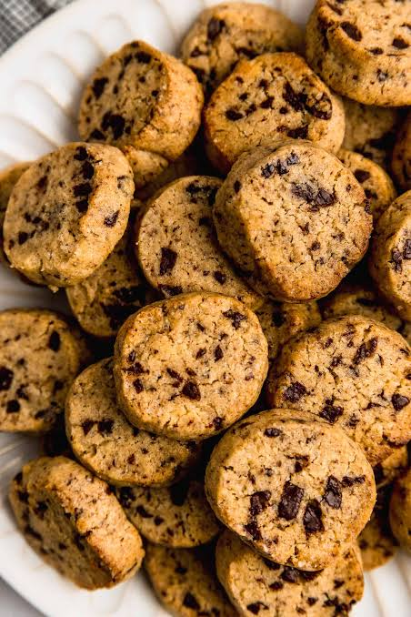

Galletas con Chips de Chocolate

Las galletas con chips de chocolate son un clásico de la repostería que nunca pasa de moda. Su combinación de una textura ligeramente crujiente por fuera y suave en el interior, junto con los trozos de chocolate fundido, las convierte en una opción irresistible para grandes y pequeños. Son fáciles de preparar y perfectas para compartir en familia, acompañar una bebida caliente o simplemente disfrutar de un dulce casero.